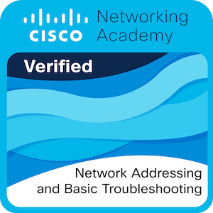

Cisco NetAcad
Cisco NetAcadNetwork Technician Career Path
Examen de la carrera de Técnico en Redes. Certificado e insignia digital.
Resistencia, Chaco · Argentina
Técnico en Informática / Redes Cisco / IoT y automatización
Instalo, configuro y doy soporte a equipos y redes. Me formo en redes con Cisco Networking Academy y en programación con IA, y desarrollo proyectos de IoT.
01
Estoy en 6.º año de la E.E.T. N.º 24 "Simón de Iriondo" (Técnico en Informática Profesional y Personal), con egreso en diciembre de 2026. La orientación abarca la instalación, el mantenimiento y el soporte de equipos y redes, y la resolución de problemas informáticos.
Trabajo en atención al público, caja y stock en una librería, donde también digitalicé el catálogo (~400 artículos) y colaboro con las redes sociales de la marca. Desde marzo de 2027 curso Ingeniería Electromecánica.
02
Credenciales verificables. Tocá «Ver certificado» para abrirlo acá mismo.
Cisco NetAcadExamen de la carrera de Técnico en Redes. Certificado e insignia digital.
 Cisco NetAcad
Cisco NetAcadNetwork Support and Security. Certificado e insignia digital.

Cisco NetAcadNetwork Addressing and Basic Troubleshooting. Certificado e insignia digital.
 Cisco NetAcad
Cisco NetAcadNetworking Devices and Initial Configuration. Certificado e insignia digital.
 Cisco NetAcad
Cisco NetAcadNetworking Basics. Certificado e insignia digital.
Generación T. Trayecto de 80 h en 6 meses, 4 módulos aprobados: fundamentos de IA, programación inicial y avanzada, y proyectos reales.
Herramientas digitales y productividad para el trabajo. ID de finalización: 340520569.
Google Digital Academy: bases del marketing digital. ID de finalización: 325905091.
03
IoT · Trabajo en equipo
Conteo de ganado con lectores RFID y una Raspberry Pi que envían los datos a una base en la nube, consultada desde una app móvil.
RepositorioBackend · Proyecto final
Sitio con backend para la Space Week de la E.E.T. N.º 24, con panel de administración y tests automatizados.
RepositorioWeb · Comercio local
Aplicación web con el catálogo de productos (~400 artículos) y la gestión de redes sociales de una librería.
04
Escribime por email o por LinkedIn.